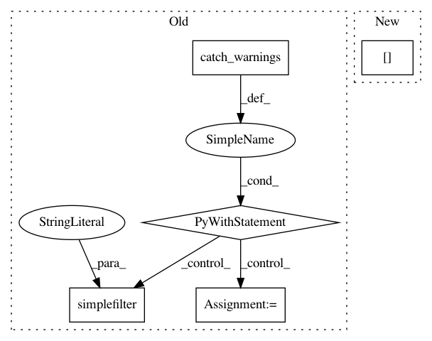

327235adabdcdff566ff74413795091353dcfc1f,batchflow/models/metrics/utils.py,,infmean,#Any#Any#,48
Before Change
arr = np.array(arr)
arr[np.isinf(arr)] = np.nan
// Mean of empty slice is expected to be np.nan, so the warning is redundant
with warnings.catch_warnings():
warnings.simplefilter("ignore", category=RuntimeWarning)
arr = np.nanmean(arr, axis=axis)
if np.isscalar(arr):
return np.inf if np.isnan(arr) else arr
arr[np.isnan(arr)] = np.inf
return arr
After Change
return masked
if isinstance(masked, ma.core.MaskedConstant):
return np.inf
masked[masked.mask] = np.inf
return masked.data
In pattern: SUPERPATTERN
Frequency: 4
Non-data size: 5
Instances
Project Name: analysiscenter/batchflow
Commit Name: 327235adabdcdff566ff74413795091353dcfc1f
Time: 2019-10-16
Author: 53620809+cdtn@users.noreply.github.com
File Name: batchflow/models/metrics/utils.py
Class Name:
Method Name: infmean
Project Name: scipy/scipy
Commit Name: 5481c313634e67ed43d0f4ee2da6a272d703cee2
Time: 2017-07-14
Author: person142@users.noreply.github.com
File Name: scipy/special/tests/test_basic.py
Class Name: TestRiccati
Method Name: test_riccati_jn
Project Name: inferno-pytorch/inferno
Commit Name: b8904ac33f1f480f451762cdede8d66f6195763a
Time: 2019-05-26
Author: valentyna.zinchenko@embl.de
File Name: inferno/trainers/basic.py
Class Name: Trainer
Method Name: wrap_batch
Project Name: scipy/scipy
Commit Name: 5481c313634e67ed43d0f4ee2da6a272d703cee2
Time: 2017-07-14
Author: person142@users.noreply.github.com
File Name: scipy/special/tests/test_basic.py
Class Name: TestRiccati
Method Name: test_riccati_yn